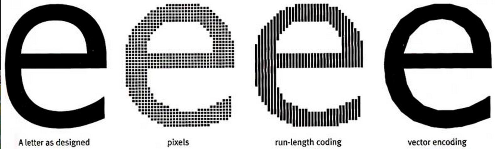

El inicio de la Tipografía
En los primeros días de la web, las opciones de tipografía eran limitadas debido a las restricciones tecnológicas. Los diseñadores web se vieron obligados a utilizar un conjunto limitado de fuentes seguras para la web, conocidas como "fuentes web seguras" o "fuentes seguras". Estas fuentes eran ampliamente compatibles con los diferentes navegadores y sistemas operativos, lo que garantizaba que los usuarios pudieran ver el texto correctamente.
Fue en 1995 cuando Netscape introdujo la etiqueta , que se estandarizó en HTML 2, permitiendo a los diseñadores web especificar fuentes, pero estas tenían que estar en la computadora del usuario o ser fuentes predeterminadas como Sans-serif o monoespaciadas. Luego, en 1996, se publicó la primera especificación de hojas de estilo en cascada (CSS), que ofrecía las mismas capacidades.
Sin embargo, las fuentes web seguras eran bastante limitadas en términos de variedad y estilo, resultando en una falta de diversidad y creatividad en el diseño tipográfico de los sitios web.
Las Fuentes Web Embebidas
A medida que la tecnología web avanzaba, surgieron nuevas formas de incorporar fuentes personalizadas en los sitios web. Una de las principales innovaciones fue la introducción de las fuentes web embebidas, que permitían a los diseñadores utilizar fuentes personalizadas que no estaban limitadas a las fuentes web seguras.
Con las fuentes web embebidas, los diseñadores podían incluir archivos de fuentes personalizadas en sus sitios web, lo que les daba más libertad para crear diseños tipográficos únicos y atractivos. Esto abrió las puertas a una mayor creatividad y personalización en la tipografía web.
Las Fuentes Web de Código Abierto
Otra evolución importante en la historia de la tipografía web fue la popularización de las fuentes web de código abierto. Estas fuentes, creadas y compartidas por la comunidad de diseñadores y desarrolladores, estaban disponibles de forma gratuita para su uso en proyectos web.
En 1998 se lanzó el estándar CSS2 con el objetivo de mejorar la selección de fuentes tipográficas en la web mediante técnicas como la coincidencia de fuentes, la síntesis y la descarga de fuentes. Estas técnicas no se utilizaron ampliamente y se eliminaron en CSS2.1, pero Internet Explorer las implementó en su versión 4.0 en 1997. Posteriormente, se incluyeron en el módulo de fuentes de CSS3 y se adoptaron en Safari 3, Firefox 3.5 y Opera, lo que ha aumentado el interés en la tipografía web y el uso de descargas de fuentes.
Las fuentes web de código abierto permitieron a los diseñadores web acceder a una amplia variedad de fuentes de alta calidad sin tener que pagar por licencias costosas. Esto democratizó aún más el diseño tipográfico en la web y fomentó la colaboración y el intercambio de recursos entre la comunidad de diseñadores.
Avances en Tecnología y Diseño
A medida que la tecnología web continuaba avanzando, también lo hacían las capacidades de la tipografía en línea. Se introdujeron nuevas tecnologías y estándares, como CSS3 y HTML5, que permitieron a los diseñadores tener un mayor control sobre la apariencia y el estilo del texto en los sitios web
Además, se desarrollaron técnicas avanzadas, como la tipografía responsiva y el uso de fuentes variables, que permitieron a los diseñadores adaptar la tipografía a diferentes dispositivos y tamaños de pantalla.
La tipografía Web en la Actualidad
En la actualidad, la tipografía web ha alcanzado un nivel de sofisticación y diversidad sin precedentes. Los diseñadores web tienen acceso a una amplia gama de fuentes web de alta calidad y pueden utilizar técnicas avanzadas para crear diseños tipográficos atractivos y efectivos.
Además, las plataformas y herramientas de diseño web han evolucionado para facilitar la incorporación y el uso de fuentes web personalizadas. Los desarrolladores web también han adoptado estándares y prácticas que garantizan una experiencia de tipografía consistente en diferentes navegadores y dispositivos.
La historia de la tipografía web ha sido un viaje de avances tecnológicos y creatividad. Desde sus iniciales limitaciones hasta la amplia variedad de opciones disponibles en la actualidad, la tipografía web ha evolucionado para convertirse en una parte integral del diseño web moderno.